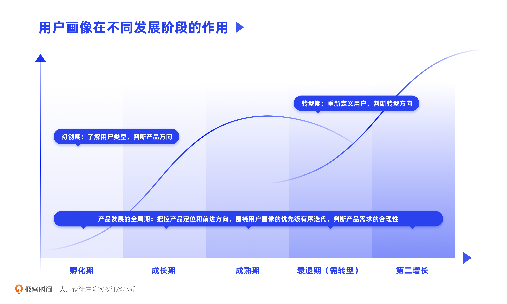
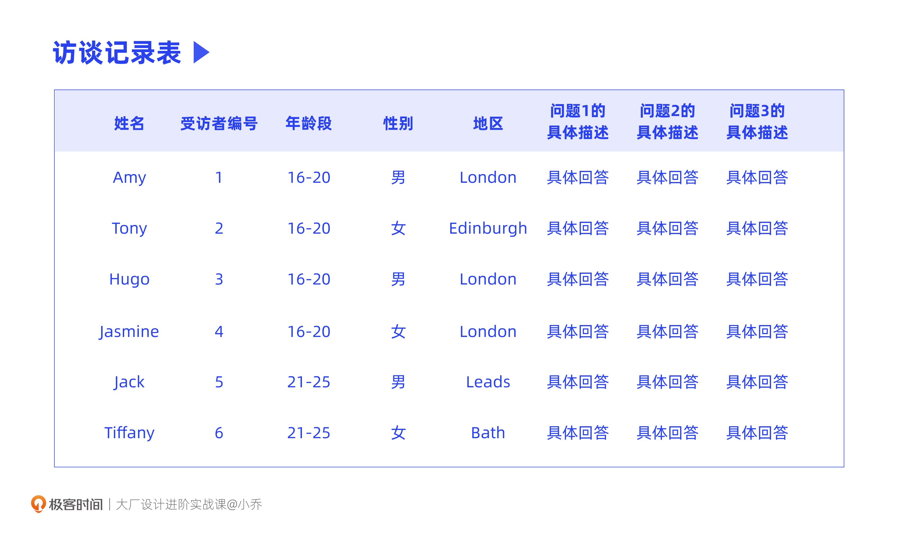
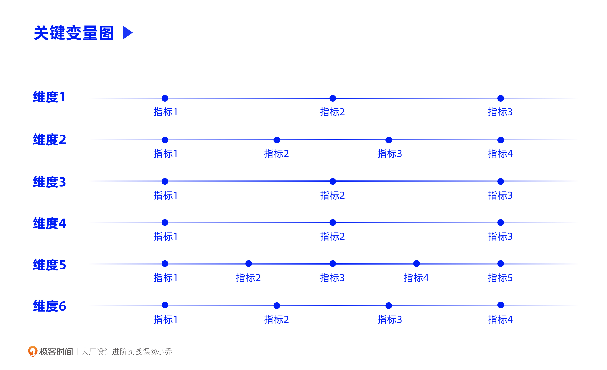
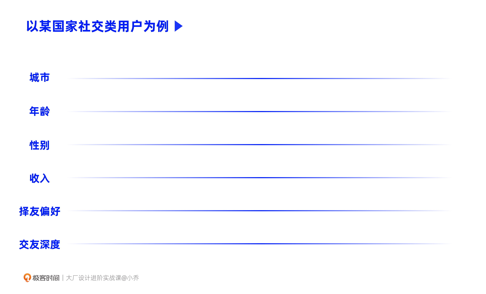
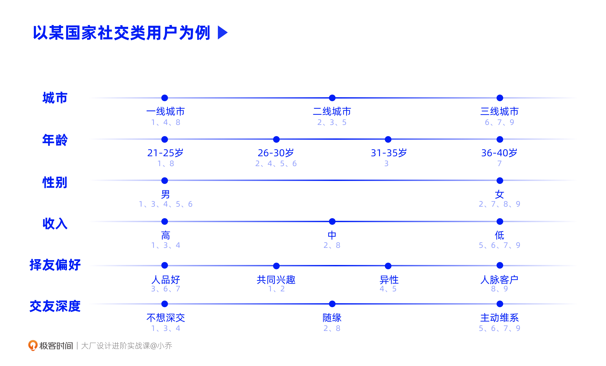
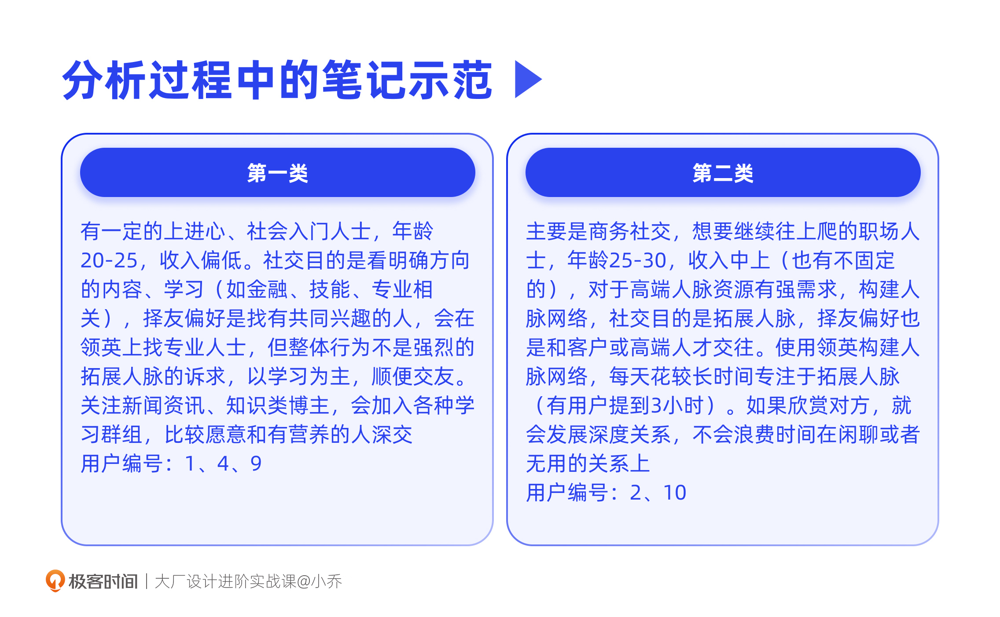
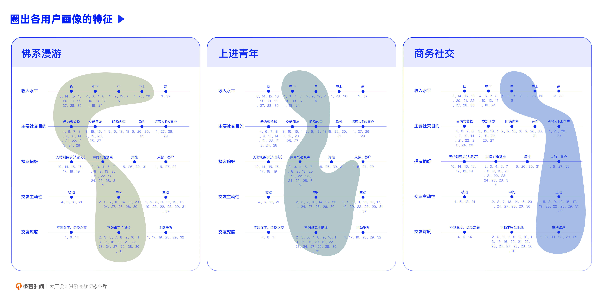
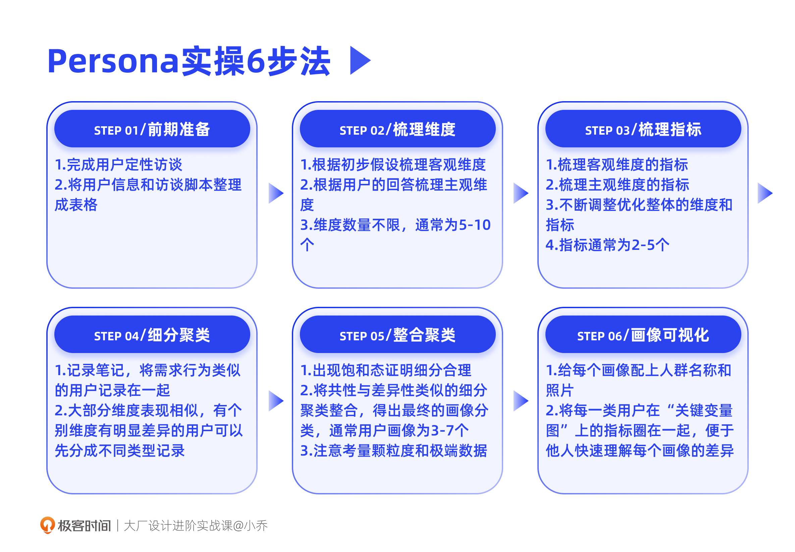

- 00 开篇词 升维思考，是设计师有效成长的第一步.md.html
- 01 业务周期：0-1-10-100-N的发展策略.md.html
- 02 商战模式：如何在商业竞争下突出重围？.md.html
- 03 市场洞察：如何找寻差异化撬动支点？.md.html
- 04 用户洞察：不懂用研的设计师不是好职场人.md.html
- 05 用户画像：是形式主义还是真的有效？.md.html
- 06 用户旅程：挖掘不同用户的核心机会点.md.html
- 07 职场晋升：看懂晋升的“游戏规则”.md.html
- 08 设计价值升级：五层进阶突破成长.md.html
- 09 基础价值 核心三原力：如何将需求转化为设计稿？.md.html
- 10 基础价值 第一性原理：从问题本质解决问题.md.html
- 11 基础价值 设计复盘：只是量化设计结果吗？.md.html
- 12 二级价值 负向网兜：如何全面发现负向问题？.md.html
- 13 二级价值 设计自驱：如何做好项目Owner？.md.html
- 14 二级价值 自驱合作：如何反内卷处理合作关系？.md.html
- 15 三级价值 增长误区：思维惯性陷阱和虚荣数据.md.html
- 16 三级价值 用户增长历程：AARRR是万能的吗？.md.html
- 17 三级价值 产品增长：如何做好产品创新？.md.html
- 18 三级价值 运营增长：如何自驱营销活动和投放？.md.html
- 19 三级价值 品牌增长 抢占心智，赢得人心红利.md.html
- 20 三级价值 增长实操：如何“步步为营”推动落地？.md.html
- 21 四级价值 L型赋能：让T型人才发挥更大价值.md.html
- 22 四级价值 “网状对比”解决共性痛点.md.html
- 23 五级价值 商业画布：设计师可以担任业务方吗？.md.html
- 24 五级价值 共创洞察：如何做好一次完善的workshop？.md.html
- 25 五级价值 领导力觉醒：写给新晋管理者.md.html
- 26 工作选择（上）：2B or 2C设计师？如何规划领域？.md.html
- 27 工作选择（下）：大厂 or 小厂？如何选择赛道？.md.html
- 28 人才地图：认知自我，成为高潜力人才.md.html
- 29 成长历程：如何从设计小白成长为团队负责人？.md.html
- 30 冰山模型：如何成为让面试官欣赏的“面霸”？.md.html
- 31 作品集指导：什么是面试官喜欢的作品集？.md.html
- 用户故事 什么是职场设计师进阶的正确姿势？.md.html
- 结束语 突破自我，成人达己.md.html
- 捐赠
05 用户画像：是形式主义还是真的有效？
你好，我是小乔。
上一讲我们学习了定性、定量调研方法。在得到用户访谈的数据后，如何进一步分析数据推理出业务的机会点呢？这就是用户画像的用武之地了。
用户画像，相信你对这个词很熟悉，不过并不是所有人都真正理解、正确应用的，许多人对用户画像的理解停留在概念表象，不清楚应用场景和分析方法。
有的同学可能认为自己作为设计师，日常工作就是接需求画图，想了解用户，看上线数据就行了，何必做用户画像呢；面试时也会遇到一些同学，拿用户画像包装作品集，从网上套了些模版，编一些用户信息，一旦被问到是如何推导、如何得出后续结论的，就回答不上来；当我们在网上搜索用户画像，各种各样的理论知识遍地都是，却很少有文章能把落地执行讲清楚，甚至还有很多错误示范。
这些乱象究其本质是因为，直到近几年，学校的相关学科教育和公司内的方法论经验，才逐渐跟上国内互联网的爆发式成长速度。在这之前，行业和人才更多是跌跌撞撞地野蛮生长。
今天就让我们一起揭开用户画像的面纱，掌握工作中运用它的方法。相信你学完后就会明白，用户画像不是形式摆设，不是套模板，而是对真实用户的洞察推导；它也不是数据的对立面，而是产品获得方向的前提，并且在上线后需要与真实数据相辅相成。
我们谈的用户画像到底是什么？
现在各行业、各职能都在说用户画像，设计师、运营、市场营销、数据分析师、算法等等，但是大家说的用户画像不一定是同一个概念。
用户画像在行业中有两种理解：Persona和Profile，这两个概念大不相同，只是在中文里都被翻译成了用户画像。两者的本质区别是：
- Persona主要用于在业务初创期、转型期指导产品方向，以及在业务发展各阶段把控需求的合理性；
- Profile是在产品上线后才能获得的，根据用户的个人信息和使用行为积累标签，便于后续的精细化运营。
指引方向的Persona
在设计领域，我们讲的主要是Persona，这是交互设计之父Alan Cooper在1998年定义的概念，需要通过定性的方式得出。
先通过调研问卷、Focus group或 1 on 1 用户访谈的方式去了解用户，然后根据用户在需求、行为和观点等维度上的不同表现，把用户区分成不同的类型，再从每种类型中总结出典型的特征，这样，就完成了用户画像的聚类。
因此Persona并不是在网上找个模板贴上假的资料就做完了。根据真实的调研，推导出来的用户聚类才有价值。真实有效的Persona，是用来帮助我们挖掘业务机会点的。只有在了解目标市场某领域（如电商、社交、音乐、游戏等等）的所有用户类型后，我们才能判断优先主打哪几类用户。之后，才能依据不同用户类型的需求、行为特征，定位产品的方向和功能。
不过，只知道Persona的基本概念还不够，我们需要进一步掌握Persona的特征，才能更有方向地指导自己和团队输出Persona。
首先，Persona不是一个笼统的用户描述，它通常会有几种，不然就失去了分类的意义。
以抖音为例，如果描述它的用户为“男女均衡，19-30岁用户TGI高，新一线、三线及以下城市用户TGI高”，这并不是在描述Persona，而是在描述整体大盘用户Profile的情况。作为一个短视频App，如果描述它的用户有这样几类：热爱发帖的表现型、默默消费内容的潜水型、热爱交友的互动型、电商交易型等等，这才是在说Persona。
其次，Persona需要符合MECE原则，相互独立、完全穷尽。也就是说，用户画像聚类得出的几种类型是可以覆盖所有用户的。比如要给某海外国家做社交产品，我们科学地调研了当地的社交型用户，分析后推导出5种用户画像，那这5种类型是可以覆盖该地区所有的社交类用户的。
反映大盘的Profile
这里我们也简单讨论一下同样被叫做用户画像的Profile，对比加深对Persona的理解。
Profile，是用定量的方式生成用户行为、需求、个人信息等标签，用这些标签来描述这个产品此时此刻的整体用户情况。这就需要产品已经上线，且积累了大量的用户数据之后，才能根据用户的人口统计学、行为、需求、相关性等等标签进行整合。这些成千上万的用户画像标签，构成了产品的用户画像Profile。
简单解释一下什么是标签，以淘宝这个国民级App为例。
逛淘宝的时候，我们总能刷到和之前搜索、购买过的商品有关联的商品。比如我买过猫粮，淘宝就会推荐猫砂、猫厕所；我买过宝宝的玩具，淘宝就会推荐宝宝的衣服、零食等商品，因为淘宝给我定义的标签就是宝妈、宠物用户。除此之外，淘宝也会将我和大盘的标签做关联，会把一线城市、30-40岁、和我ARPU值相似、女性用户高频购买的商品推荐给我，提升我的交易转化。
不管是Profile还是Persona，或是其他常用的RFM、K-means Clustering等模型，它们都只是分析工具。不同职能的同学，可以生成自己的工作所对应需要的用户模型，来帮助自己达成工作目标。
关键是我们需要清楚自己所负责项目的目标是什么，需要通过哪些条件来做判断。当你清晰了自己的目标和分析条件，才能改良已有模型并灵活应用，甚至自创更方便的模型。
Persona的应用场景是什么？
相信你现在也更深入地理解了Persona是什么，那在我们的设计工作中它到底有什么用？能如何应用呢？
首先，Persona对业务机会点有突破作用，这主要体现在产品的孵化阶段和转型创新阶段：
- 从0到1孵化一个新产品时，我们需要先对目标市场和行业有所了解，知道一共有哪几类用户，优先满足哪类用户的需求可以让产品活下来；
- 对于衰退期陷入瓶颈的产品进行方向变更或创新突破，因为主打的行业发生了变化，或者产品定位发生了拓展，我们都需要重新去了解用户，找准下一步要撬动的用户群体。
在这两个关键阶段，公司缺乏对用户的了解，也缺乏大量的用户数据支撑，此时Persona就是判断方向的重要工具。
除了这两个关键阶段，在产品发展的全周期中都需要关注Persona。

虽然产品已经上线，且积累了大量用户行为数据，只有遵循Persona的优先级，才可以保证在满足最重要人群需求的同时，不破坏次重要人群的需求。
举个例子，一个短视频App，核心用户是内容消费型用户，现在发展到瓶颈期需要转型，将以撬动电商用户作为未来的增长抓手。当业务同学提出把首页改成电商导购时，我们就可以拿用户画像来反驳，虽然电商用户是未来的重点抓手，但最重要的用户群体依然是内容消费型用户。
这也是为什么抖音、快手并没有因为要做GMV营收就把整个产品改成以电商为主，直播电商内容仍被控制在恰当的占比。当然如果一个产品就是要彻底颠覆原本的心智和定位，Persona中的核心用户类型也需要相应发生变更。
Persona能帮助我们判断产品需求的合理性，围绕用户画像的优先级有序地发展。功能迭代不是你一言我一语地拍脑袋，那样需求会离散，甚至跑偏。如果一意孤行，为了短期的数据，丧失了良好的体验，这样的产品是很难持续生存的。
最后，Persona还是一个优秀的沟通工具，帮助产品、运营、设计、研发等各职能角色迅速理解我们在为谁做产品。为便于沟通和描述，通常会给聚类好的每个画像赋予人群名称、照片等信息，带入角色使其更容易被理解。用人性化的语言描述用户类型，让听众一目了然。
用户画像的实操方法
理解Persona的概念和重要性后，我们一起来学习具体的实操分析方法。
接下来，我将以一个海外社交App的用户画像为案例进行说明（该案例是我负责过的真实项目，数据都已进行删改和脱敏，仅作为案例演示）。这套方法论是我之前做咨询时使用的分析方法，我给自己目前的部门做过培训，产品和设计学习后都可以根据这套方法独立完成分析，其他部门同学在学习后，也反馈对业务有显著帮助。
最终完成的用户画像会是这样的，有具体的画像分类、每类人群的大致信息、每类用户的典型需求行为描述。给每类用户起个代号、配上照片，能够帮助他人更好地理解。最下面用户数量的标记不是定量分析，只是为了让我们定性地感知哪一类用户的量最大或最少。
好，我们马上开始动手实操。
第一步：前期准备
根据上节课的学习，在开始分析之前，我们已经按初步假设，根据招募条件完成了用户的招募和定性访谈，人数一般在20人以上。
不管是Focus group还是 1 on 1 访谈，我们都需要确保至少这20个用户在访谈中的回答是完整的，而不是问了30个问题只回答了10个，这样很难根据有限的回答判断该用户的类型。如果一个用户的访谈数据不完善，无法让你完成分析推导，可进行补充访谈，如果条件不允许，这个用户的数据就需要被舍弃。
对人数的要求，如果招募用户的条件分布全面，用户也都严格符合要求，其实只访谈10个用户也可以推导出用户画像，但这将极其考验我们的分析能力。为了确保结论的准确性，在没有调研经费限制的情况下，建议将数量提升至20人。
在分析之前，建议把用户的姓名、focus group分组号、受访者编号、年龄、性别、地区等人口属性信息整理成表单，同时也把访谈的问题和回答一并整理上去。这会大大提升之后分析的效率，不用反复听录音或查看访谈文字稿。

在收集到充分的用户访谈数据后，我们都知道下一步要做用户分类。那么以什么条件分类才合理呢？
这就需要我们找寻影响用户行为需求的关键变量，可以用“关键变量图”来帮助分析，主要分为两步：维度、指标。

第二步：初步判断影响用户需求行为的变量维度
在招募用户做定性访谈时，已经根据初步假设梳理了招募条件，这些条件都将作为最初分析的维度。这些维度相对来说以客观物理条件为主，比如：地理城市、年龄、性别、收入等。
在分析访谈回答的过程中，我们会感受到更多维度对用户的影响，它们相对来说需要主观推理得出。比如分析采访海外社交App用户的回答，发现用户在择友偏好、交友深度等方面有明显的差异，那这两个维度也会影响用户的需求行为。
把客观维度与主观推理维度都记录下来，数量不限，一般5-10个不等。

第三步：逐个分析每一位受访者，梳理每个维度的指标
在逐个分析受访者数据的过程中，我们根据用户的回答，对每一个维度梳理出相应的“指标”。指标就是在这个变量维度上，用户的不同表现。指标没有数量限制，通常在2-5个。
注意分析过程中，需要将受访者的编号记录在每一个维度的指标上，帮助我们追溯和复查，也能帮助我们感受大概的数量分布。
对于客观的维度，我们可以提前根据用户的信息制定指标。比如把年龄分为16-20、20-25、26-30岁等，重点不是定量统计每个年龄段有多少人，而是给我们一个定性的年龄概念，这类用户是偏年轻的人群，还是年迈的人群。
对于需要主观推理的维度，指标无法提前得出，只能在分析过程中逐渐总结出来。
比如根据回答，我们才逐渐发现用户的择友偏好可以分为：和人品好的人交往、和有共同兴趣的人交往、主要和异性交友、社交是为了拓展人脉客户等。

再比如在推导用户画像时，我们最初猜测城市的发达程度会影响用户的需求行为，但直到分析完毕看这张图，并没有发现城市维度对用户的需求行为有明显决定作用，不管是一线城市还是三线城市，用户的社交情况几乎相似，因此去掉了城市的维度。
维度和指标都会在分析全程不断调整、优化。分析的用户量越多，我们对于维度和指标的认知就越清晰，这是一个不断优化的过程。
第四步：将受访者画像进行细颗粒度的聚类
在分析过程中，随时在文档中记录用户的典型需求行为和我们的思路，把有明显相似性的用户记录在一起，用笔记给我们聚类画像提供便利。

当遇到两个用户大部分维度指标都类似，但有个别维度的表现不同时，可以先拆分成不同的类型，不必强行合并成同一类画像，不然会造成信息的损失。
比如有一大类是热爱交友的，有的用户只需要对方人品好就愿意交朋友，而有的用户只喜欢和兴趣相同的人交朋友，我们不必强行合并这两种用户，可以暂时另起一个Persona，之后整合时再看是否合并。
如果有用户同时表现出两个指标的行为，需要判断哪个是他的主要行为。比如有用户非常热爱交朋友，但同时也会联络客户进行商业社交，此时需要判断他这两种表现的频率以及其他表现跟哪一类用户更相似，从而判断他是哪一类用户。
在聚类过程中，可能会区分出将近10种画像，这是正常的细颗粒度聚类现象，但如果聚类超过10种，则要思考是否分类的颗粒度过细了，有些用户是否应该相互合并。除非调研课题足够泛，否则不太会出现画像超过10种的情况。
第五步：整合细分聚类，得出用户画像
分析过程中，如果后续的受访者都可以并入到前面已经整理出来的聚类，恭喜你，说明画像类型已经全部梳理完毕。很少会出现受访者全都分析完毕，但依然有新类型出现的情况，如果真的遇到了，我们要复查是否颗粒度拆分得过细，导致难以归类。
分析完毕后，通盘查看所有的细分聚类，尝试分析出共性和差异性，在这个过程中，有些细颗粒度的聚类可以整合成同一个用户画像。大部分情况下，用户画像能整合成 3-7 个。
在整合时，我们要注意两点：颗粒度、极端数据。
你会发现，如果分析颗粒度粗一些，画像的数量就会少，如果分析颗粒度细一些，数量就会变多。具体的颗粒度粗细，需要根据实际项目情况判断。我们的核心目标是以这些画像来梳理不同人群的需求和行为，得出业务机会点。
同时也需要合理分析极端数据，用户画像是为了通过分析得出典型用户类型。所谓典型，就需要有一定基数的共性。当某一个用户完全无法与其他用户的画像聚类时，该画像就是“极端信息值”，需要考量这个特殊情况是否是业务接下来需要涵盖的用户。
第六步：用户画像的可视化传达
我们前面说过，Persona是一个优秀的沟通工具，给每一类Persona取一个可以代表这个群体特征的名字，再配上符合这类用户气质的照片，有助于同事快速理解。
比如使用社交软件的用户中，有一类用户主要进行内容消费娱乐，他们的核心需求是刷刷图文和短视频打发时间，取名“佛系漫游”就很形象；有一类用户也主要是进行内容消费，但他们只穿梭在各种技能、知识类群组里，或者只消费知识类内容，就可以叫“上进青年”。
在“关键变量图”中，将每一类用户的指标圈在一起，便于我们在讲解用户画像时，让听众可以快速理解影响这类用户需求行为的关键条件。

以“佛系漫游”、“上进青年”、“商务社交”这三个Persona为例，我们可以在图中看出，每个画像的需求行为差异是很大的。“佛系漫游”用户主要看内容，如果在网络上遇到合得来的人也愿意交朋友；而“商务社交”用户有强烈的人脉社交目的，不愿浪费时间在不值得社交的人身上。
清楚了各画像的特征后，我们后面才能对症下药，围绕用户需求，探索出产品机会点。
如何判断用户画像的正确性？
成功推导出Persona之后，又如何判断正确性呢？毕竟我们也需要让合作同事信任我们的产出成果。
首先，聚类的过程会有一个“饱和态”，也就是所有的用户都可以归类到已经推导出的几种类型中。达到饱和态，就说明我们的归类是正确的。不太熟练的同学，通常需要分析到大概第15个用户才能达到饱和态，这也是为什么我建议访谈20个用户。
其次，在开发产品的过程中，我们会收到真实用户的反馈或需求。在这个过程中如果没有出现和画像差异很大的情况，也侧面验证了我们的画像是正确的。
用户画像推理的本质是信息的打散和重组，所以你不用担心推导出来的Persona是错误的，可能性并不大。不过，不太熟练的同学和经验资深的同学推导出来的画像，确实存在较大差异，主要在于分析的全面性和深入度。
第一次实践的同学分析出来的结论可能更流于表象，更偏向常识；资深同学能更全面地总结出每个画像的行为、需求特征和机会点建议，给到项目成员更大的帮助和突破性洞察。如果你的洞察和总结能力比较好，在访谈用户的过程中，甚至就已经可以初步判断有哪几种用户类型了。
但是洞察能力只能在不断练习的过程中提升，practice makes perfect。
今日小结
定性的Persona可以在业务初创期、转型期指导产品方向，在业务发展各阶段，也可以用来把控需求的合理性。它并不是用来包装项目的形式主义，需要严谨地分析推理得出。我们以一个海外社交App的案例，拆解了用户画像的详细实操步骤，并最终可视化地传达给合作方。

相信你现在已经明白用户画像对项目发展是非常有效的，那这个事情该由谁来主导呢？
目前大厂都强调打破职能边界，不管你是产品、运营、设计、用研或是战略，只要你想发力，你就可以主导。我更鼓励离用户最近的设计团队主导，设计师和用研同学共同推动。当产品方向摇摆不定以及身处瓶颈期需要突破时，用户画像是非常有效的推理工具，因为做好产品需要以用户为中心。
如果你是小厂的同学，不用担心人力不完善，大厂其实也不完善，各个部门、各个职能也都缺人，因为如果人力招聘过度，会造成内卷的不良氛围。在我团队没有招到用研的时候，是我带着设计师、产品经理、运营同学一起来做用户画像分析的。
所处的环境并不能制约我们，不管小厂大厂，行业和团队都是多变的，关键在于我们设计师要有主动自驱的意识和能力，能在项目中发挥主导作用，能在多变的条件下解决问题。除了接需求画设计稿以外，我们还有太多的力量可以发挥，共勉。
互动时刻
你目前负责的项目中，有清晰的用户画像和业务发展方向吗？如果没有，是什么原因造成的？打算怎样解决问题呢？
如果已经有比较清晰的画像，在可公开讨论的前提下，欢迎在留言区分享你的经验，与我和其他同学一起讨论，让我们在互相交流的过程中，向彼此学习更多的行业知识。
如果你觉得有所收获，也欢迎把文章分享给你的朋友，说不定就帮TA解决了困惑。我们建立了一个读者交流群，欢迎你的加入！我们下节课见。
© 2019 - 2023 Liangliang Lee. Powered by gin and hexo-theme-book.